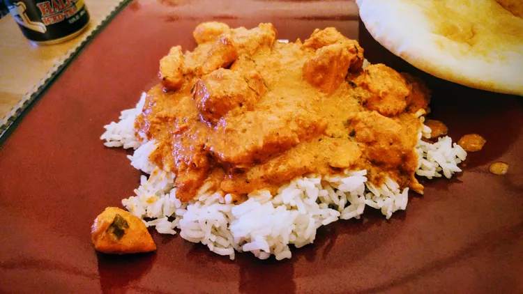

Butter Chicken

Ingredients:
- 1 lb chicken breast, cut into pieces
- 1 cup plain yogurt
- 2 tbsp lemon juice
- 2 tsp garam masala
- 1 tsp turmeric
- 1 tsp chili powder
- 1 tsp salt
- 2 tbsp butter
- 1 onion, finely chopped
- 2 cloves garlic, minced
- 1 inch ginger, grated
- 1 can (14 oz) tomato sauce
- 1/2 cup heavy cream
Instructions:
- In a bowl, combine yogurt, lemon juice, garam masala, turmeric, chili powder, and salt. Add chicken pieces and marinate for at least 1 hour.
- Heat butter in a large pan over medium heat. Add onion, garlic, and ginger, and sauté until onions are translucent.
- Add marinated chicken to the pan and cook until browned on all sides.
- Pour in tomato sauce and simmer for 15-20 minutes until chicken is cooked through.
- Stir in heavy cream and cook for an additional 5 minutes. Serve hot with rice or naan.
Back to Home